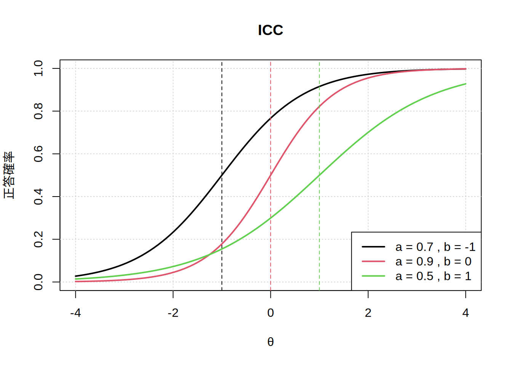

icc <- function(params, tr = c(-4, 4), np = 100) {
# 引数チェック
if (!is.list(params) || !all(c("a", "b") %in% names(params))) {
stop("`params` must be a list with named elements `a` and `b`.")
}
if (length(params$a) != length(params$b)) {
stop("`params$a` and `params$b` must have the same length.")
}
# 正答確率関数
p2pl <- function(t, a, b) {
1 / (1 + exp(-1.7 * a * (t - b)))
}
# 能力範囲を生成
t_vals <- seq(tr[1], tr[2], length.out = np)
# プロットの初期化
plot(NULL,
xlim = tr, ylim = c(0, 1), type = "n",
xlab = "θ", ylab = "正答確率",
main = "ICC"
)
grid()
# 各項目の特性曲線を描画
for (i in seq_along(params$a)) {
a <- params$a[i]
b <- params$b[i]
p_vals <- p2pl(t_vals, a, b)
lines(t_vals, p_vals, lwd = 2, col = i) # 番号を色に対応
abline(v = b, col = i, lty = 2) # 困難度のライン
}
# 凡例を追加
legend("bottomright",
legend = paste("a =", params$a, ", b =", params$b),
col = seq_along(params$a), lwd = 2, bg = "white"
)
}
params1 <- list(
a = c(0.7, 0.9, 0.5),
b = c(-1, 0, 1)
)
icc(params1)